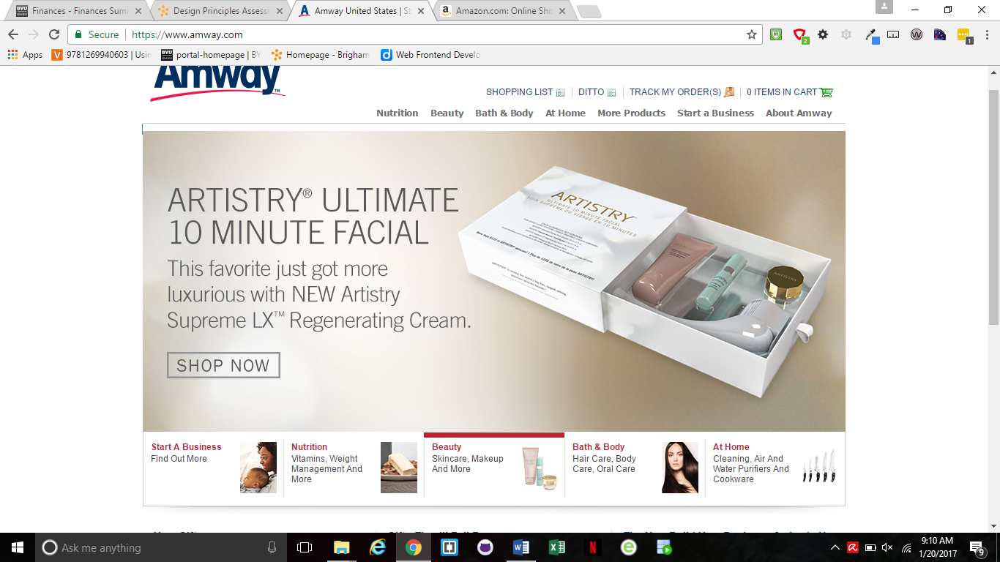
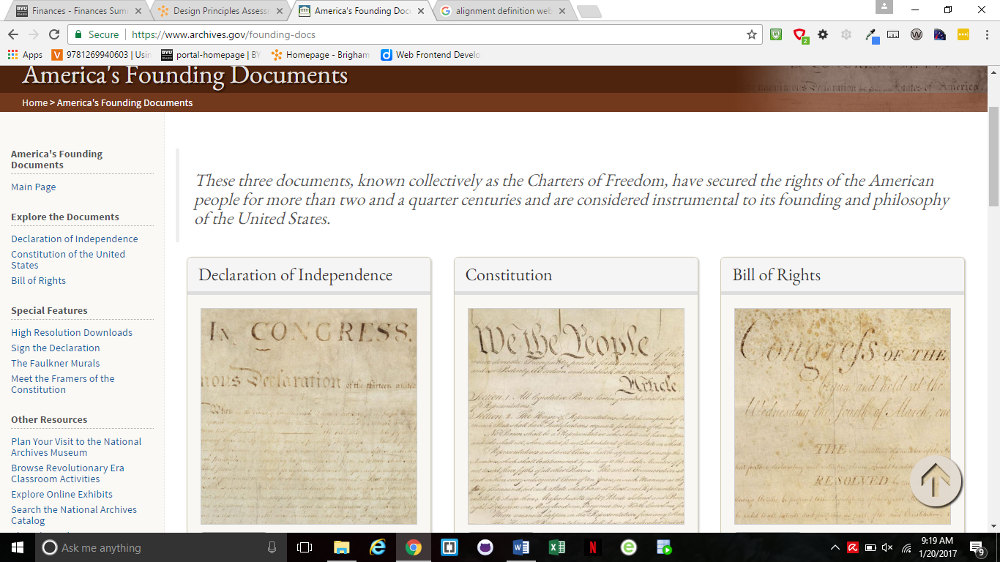

Design Principles in Mobile Sites
Proximity — Marwin Palea
We see here on Amway the grouping of what they offer. Though they have many partner stores they have grouped here on their home page the main products they can offer to you before branching out to their partners. You see the start a new business, nutrition, beauty, and bath and body tags. Those are grouped together along with the picture box so you can hover over each link and it gives you a brief view, explanation, and foresight of what is offered.
Alignment — Marwin Palea
https://www.archives.gov/founding-docs
Here on this government page we see a great example of alignment. The page is neat and east to use. The main documents pertaining to our constitution are place in a straight line across the middle to crate order for the main material of the page. The links at the top are in a straight line and a link area has been created on the left side in a vertical box adjacent to the main material, almost like a table of contents for the page.
Repetition —
Contrast —
Typography —